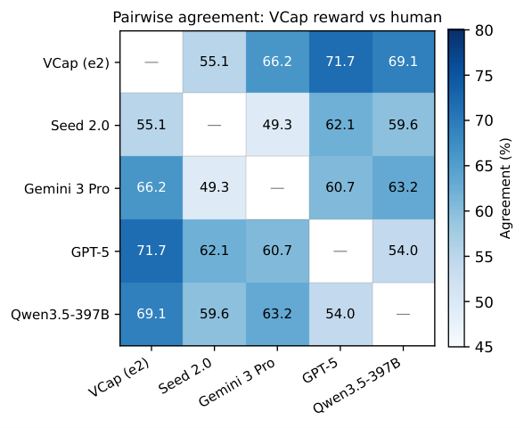

VCap: Hypergeometric Rewards for Weak-to-Strong Visual Captioning VCap：面向弱到强视觉描述的超几何奖励机制
A Witness-Adjudicator reward pairing reference captions with visual grounding to achieve hypergeometric-level factual precision—enabling an 8B model to beat open- and closed-source SOTA captioners.
提出“证人-裁决者”奖励机制，结合参考文本与原始视觉信号进行事实一致性核验，在存在不完美参考标注的条件下实现弱到强泛化，驱动 8B 模型在多项图文与视频描述基准超越开源及闭源 SOTA。

Abstract摘要
Visual captioning requires models to capture visual content faithfully while minimizing both omission and hallucination. While RL has emerged as a promising route to drive MLLMs toward higher precision and broader coverage, existing captioning rewards fail to deliver fine-grained, reliable signals for factual verification.
We propose VCap, a Witness-Adjudicator reward that pairs the reference caption (a witness) with the visual signal (an adjudicator). By explicitly verifying factual consistency between reference and policy-generated captions grounded in visual evidence, VCap delivers a reward signal with hypergeometric-distribution-level precision, enabling weak-to-strong generalization even from imperfect references. An 8B model trained with VCap outperforms open- and closed-source SOTA models across multiple image and video captioning benchmarks, improves general perceptual capability, and surpasses best-of-N distillation.
视觉描述要求模型忠实覆盖画面细节并同时压低遗漏与幻觉。本文提出 VCap 证人-裁决者奖励机制，将参考描述作为证人、原始视觉信号作为裁决者进行显式事实一致性核验，提供达到超几何分布级精度的细粒度奖励信号，即使参考标注不完美仍能驱动强化学习实现弱到强泛化。实验表明，经 VCap 训练的 8B 模型在多项图像与视频描述基准上超越开源与闭源 SOTA，并优于 Best-of-N 蒸馏。
Human Pairwise Evaluation人工成对评测对齐度

Citation引用格式
@article{keyevideo2026vcap,
title = {VCap: Hypergeometric Rewards for Weak-to-Strong Visual Captioning},
author = {Keye Video Team},
journal = {arXiv preprint arXiv:2605.28023},
year = {2026},
url = {https://arxiv.org/abs/2605.28023}
}